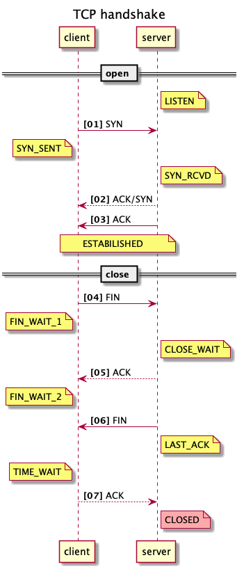
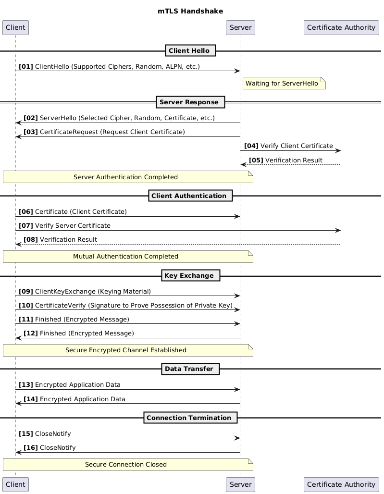

TLS (Transport Layer Security)
TCP flow

title TCP handshake
participant client
participant server
autonumber "<b>[00]"
== open ==
note right of server: LISTEN
client -> server: SYN
note left of client: SYN_SENT
note right of server: SYN_RCVD
server --> client: ACK/SYN
server -> client: ACK
note over client, server: ESTABILISHED
== close ==
client -> server: FIN
note left of client: FIN_WAIT_1
note right of server: CLOSE_WAIT
server --> client: ACK
note left of client: FIN_WAIT_2
server -> client: FIN
note right of server: LAST_ACK
note left of client: TIME_WAIT
client --> server: ACK
note right of server #FFAAAA: CLOSED
mTLS flow

title mTLS Handshake
participant Client
participant Server
participant "Certificate Authority" as CA
autonumber "<b>[00]"
== Client Hello ==
Client -> Server: ClientHello (Supported Ciphers, Random, ALPN, etc.)
note right of Server: Waiting for ServerHello
== Server Response ==
Server -> Client: ServerHello (Selected Cipher, Random, Certificate, etc.)
Server -> Client: CertificateRequest (Request Client Certificate)
Server -> CA: Verify Client Certificate
CA --> Server: Verification Result
note over Server, Client: Server Authentication Completed
== Client Authentication ==
Client -> Server: Certificate (Client Certificate)
Client -> CA: Verify Server Certificate
CA --> Client: Verification Result
note over Client, Server: Mutual Authentication Completed
== Key Exchange ==
Client -> Server: ClientKeyExchange (Keying Material)
Client -> Server: CertificateVerify (Signature to Prove Possession of Private Key)
Client -> Server: Finished (Encrypted Message)
Server -> Client: Finished (Encrypted Message)
note over Client, Server: Secure Encrypted Channel Established
== Data Transfer ==
Client -> Server: Encrypted Application Data
Server -> Client: Encrypted Application Data
== Connection Termination ==
Client -> Server: CloseNotify
Server -> Client: CloseNotify
note over Client, Server: Secure Connection Closed
Certificate
证书是一个数字文档，用于证明网站或个人的身份。它包含实体名称、实体类型、颁发日期和到期日期等信息。
证书用于验证网站或个人的身份。它们还用于保障互联网上的数据传输安全。 最常用的 X.509 证书参见 Certificate
ALPN
ALPN（Application-Layer Protocol Negotiation 应用层协议协商）是 TLS 协议的一个扩展，它使客户端和服务器能够在TLS握手过程中协商使用哪种应用层协议。这避免了额外的往返通信来确定应使用哪种协议的开销。
ALPN对于HTTP/2、gRPC和QUIC等协议特别有用，在这些情况下，您可能希望在不发起单独握手的情况下协商使用哪种协议。
How ALPN Works
During the TLS handshake:
The client sends a list of supported protocols in the ALPN extension as part of the ClientHello message.
The server responds with the protocol it chooses from the list in the ServerHello message.
This negotiation happens before any actual data is transmitted, allowing both sides to immediately start using the chosen protocol (like HTTP/2) once the handshake is complete.
ApplicationProtocolConfig in gRPC (Java)
In gRPC’s Java implementation, ApplicationProtocolConfig is a class that allows configuration of ALPN settings for the gRPC client and server. When gRPC is using TLS (typically over HTTP/2), this configuration tells the underlying transport layer (like Netty) which protocols are supported and how to negotiate the protocol.
Key Aspects of ALPN in gRPC (Java)
Protocol Negotiation: ALPN allows gRPC clients and servers to specify the supported protocols during the TLS handshake. For example, the client might support HTTP/2, and the server might respond with the protocol that matches (or fall back to HTTP/1.1 if necessary).
ALPN in gRPC: gRPC generally uses ALPN to ensure that both sides (client and server) are in sync about which protocol should be used. If the server supports HTTP/2, the negotiation ensures that the connection uses HTTP/2 for communication rather than falling back to an older protocol like HTTP/1.1.
ApplicationProtocolConfig in Java gRPC: This class allows you to configure the ALPN protocols supported by the gRPC client or server. For example, it can specify that the client supports HTTP/2, and you might also add the protocols the server should support for proper negotiation.
Example Usage in gRPC (Java)
When you configure a gRPC client or server with TLS, you might want to set up ALPN configuration for protocol negotiation.
Here’s an example for configuring an “ApplicationProtocolConfig” with a gRPC client:
import io.grpc.netty.GrpcSslContexts;
import io.grpc.netty.NettyChannelBuilder;
import io.netty.handler.ssl.ApplicationProtocolConfig;
import io.netty.handler.ssl.ApplicationProtocolConfig.Protocol;
import io.netty.handler.ssl.ApplicationProtocolConfig.SelectedListenerFailureBehavior;
import io.netty.handler.ssl.ApplicationProtocolConfig.SelectorFailureBehavior;
import io.netty.handler.ssl.SslContextBuilder;
import java.net.URI;
public class ALPNExample {
public static void main(String[] args) throws Exception {
// Build SSL context with ALPN support for HTTP/2
SslContext sslContext = GrpcSslContexts.forClient()
.trustManager(InsecureTrustManagerFactory.INSTANCE) // Trust all servers
.applicationProtocolConfig(new ApplicationProtocolConfig(
Protocol.ALPN, // ALPN protocol
SelectorFailureBehavior.NO_ADVERTISE, // Fail if no protocol match
SelectedListenerFailureBehavior.ACCEPT, // Accept if negotiation fails
"h2", "http/1.1" // Supported protocols
)).build();
// Create the Netty channel builder and set the SSL context
NettyChannelBuilder channelBuilder
= NettyChannelBuilder.forAddress('localhost', 443))
.sslContext(sslContext);
// Use the channel for your gRPC client connection...
}
}
Key Points:
Protocol Negotiation: ALPN helps negotiate the correct application protocol (e.g., HTTP/2) for the connection.
ALPN Configurations: The
ApplicationProtocolConfigallows you to specify which protocols you want to use and the behavior if the negotiation fails.Usage in gRPC: This helps gRPC ensure that the connection uses the right protocol (e.g., HTTP/2) over a secure TLS connection.
In summary, ApplicationProtocolConfig and ALPN are essential for making sure that the appropriate protocol is chosen when a gRPC client and server negotiate a TLS connection, especially when multiple protocols (like HTTP/2 and HTTP/1.1) are available.
Reference
TLS 1.2 规范：RFC 5246 https://datatracker.ietf.org/doc/html/rfc5246
TLS 1.3 规范：RFC 8446 https://datatracker.ietf.org/doc/html/rfc8446